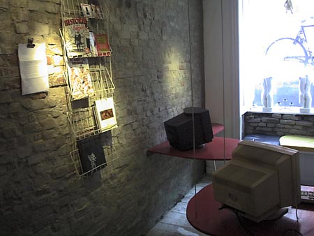

En forening, et sexualpolitisk, aktivistisk, kunstnerisk forum for alle bøsser, lesbiske, transvestitter, draqqueens og -kings, freaks der har noget på hjertet og stræber mod at opretholde en unik, kraftfuld, farverig, larmende og spændende homoundergrund i Danmark.
Derudover er dunst:
- Performance - gruppen
- DJ - gruppen
- Kunst i dunst - gruppen
- Tv/ film - gruppen
- S.K.A.M/ K.L.A.M. - gruppen
- Kom og lav din egen gruppe hvis den mangler.
- Hjemmesiden, hvor vores flittige web-mistress sørger for at der altid er
nyheder om arrangementer i kalenderen, fotos, udklip fra pressen og andre
dunst-relaterede emner.
Mange dunstnere er med i mere end en gruppe, andre er slet ikke med i nogen gruppe, men har til gengæld kørekort, eller er helt vildt dygtige til at dele flyers ud.
Hvordan startede dunst?
I 2001 sad en gruppe venner i en lejlighed på vesterbro og var trætte af de manglende alternativer på den Københavnske homo-scene. Trætte af at hele miljøet er bygget op omkring sex, dyr fadøl, melodi grand prix og ensretning.
Efter snakken om at starte en sexualpolitisk forening for minoriteter i bøsse miljøet, transer, etniske, ensomme, punks, alle dem der ikke lige følte sig så godt tilpas i det etablerede miljø, satte Miss Fish sig ned og fandt på en masse navne som hun senere læste op for Ramona Macho. TransMission, half Man - half Babe, Mongrel, Hysteria... -"Det er alt for højtideligt" svarede Ramona Macho. -"hvorfor kalder vi det ikke bare for dunst". Og så blev foreningen grundlagt.

Senere blev der rejst økonomisk støtte til at leje et par kælderlokaler i Sommerstedsgade. Her blev der indrettet internetcafé med webcam og fælleskøkken, der var en ugentlig filmaften, og andre arrangementer. Der blev kopieret en bunke nøgler så alle kunne komme og gå som de ville, og pludselig havde alle fået internet.

dunstfester
dunstfester har siden budt på liveshows med selvkomponeret musik, nogle af byens bedste undergrunds-dj's, i vores eget fest-koncept, som regel med en eller anden form for tema.
dunst handler om at flippe ud, og roller spilles for sjov, ikke fordi man ikke tør være sig selv. Tag ikke til en dunst-fest hvis du bare vil læne dig tilbage og lade dig underholde. Vi opfordrer alle gæster til at deltage, være med til at køre stemningen op til et klimax af løssluppenhed, skønhed, flirt, dans, sex, spontanitet og show.
S.K.A.M./K.L.A.M.
Nogle bøsser i dunst gik sammen om at lave gruppen SKAM som modsat performancegruppen ikke ville deltage i Danish Pride Paraden 2003 eller priden i det hele taget. Offisielt deltog dunst men drejede af ind til SKAM i H.C.Ørstedsparken inden Røvhulspladsen.
I 2004 deles SKAM gruppen i 2, SKAM og KLAM.
SKAM
Aarrangere homo, bøsse eller lebbefester som er 100% Heterofri og showfri.
KLAM
Eer en politisk gruppe som demonstrerer mod Danish Pride.
dunst i Bøssehuset
I foråret 2003 blev dunst tilbudt at flytte til Bøssehuset på Christiania. Bøssehuset, der oprindeligt er et bøsseteater, havde stået mere eller mindre "tomt" i et par år, og blev nu kun af og til brugt som øvelokaler for div. bøssekor, squaredance-grupper, og så hvert andet år som backstage til 'Frøken Verden' i den Grå Hal.
Efter et par diskussioner Bøssehuset og dunst imellem, takkede vi ja til også at blive en aktiv del af Bøssehuset, pakkede kælderlokalerne sammen og tog en flyttebil til fristaden. Den skulle dog vise sig ikke at være så fri endda.
Vi meldte vores ankomst med den berygtede 'Helligånds fest', 8 juni 2003 i pinsen. Dagen efter var der adskillige både skriflige og mundtlige klager, en lokal Christianit truede endda med at smadre vores homo-hoveder med et baseballbat, hvis vi nogensinde holdt fest igen.

Idag holder vi tirsdagsmøder i Galebevægelsens lokaler på Frederiksberg.
dunst's aktiviteter
Performancegruppen har optrådt flere steder i Danmark, Sverige, Berlin, og Amsterdam.
I 2002 startede dunst-bio, som kørte en gang om ugen i halvandet år.

Derudover har vi arrangeret 2 filmevents i Cinemateket.
I 2003 arrangerede dunst også udstillingen 'Kunst i dunst' i Bøssehuset.
dunst er blevet kontaktet af et pladeselskab som ønsker at udgive nogle af dunst-performerenes sange og musik. Udgivelsesdato er endnu ikke fastsat.
Vi lægger vægt på at være aktivister, dvs. at alle giver en hånd med til arrangementer, kommer til møderne og hjælper hinanden på tværs af grupperne. Alt aktivistarbejde er ulønnet, og alle dunst's indtægter går til foreningens drift.
Hvad taler vi om på møderne?
På dunst-møderne diskuterer vi fremtidige arrangementer. Alle er velkomne
til at foreslå punkter på dagsordenen. Tirsdagsmødet er også stedet hvor nye
medlemmer kan komme og præsentere sig selv, og nye medlemmer kommer altid på som punkt nummer et.
Bliv medlem!
Det koster 50 kr om året i medlemsgebyr. Alle der har lyst er velkomne til at være med i dunst. Hvis du kunne tænke dig at blive dunst-aktivist kan du skrive en mail til info(a)dunst.dk
Print denne side